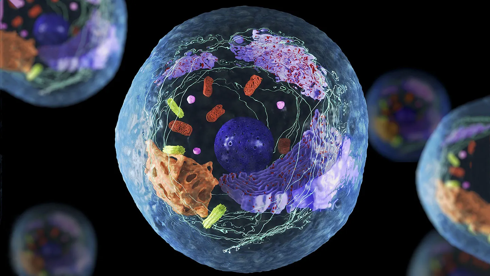
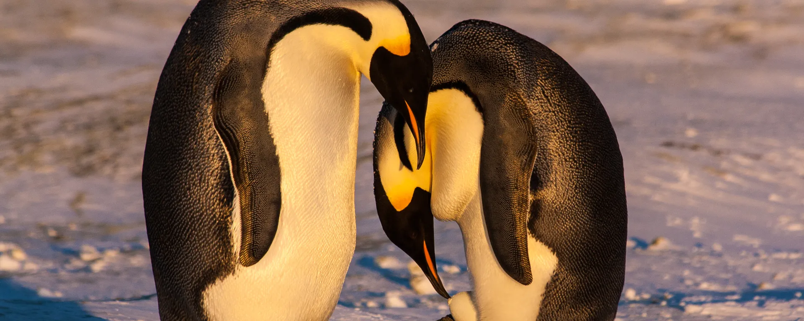
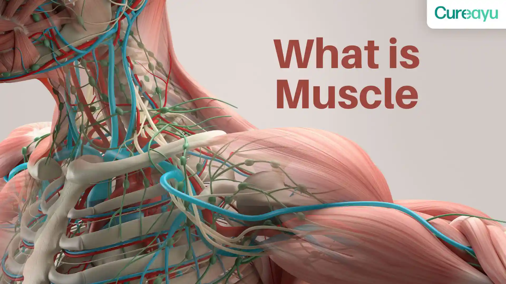
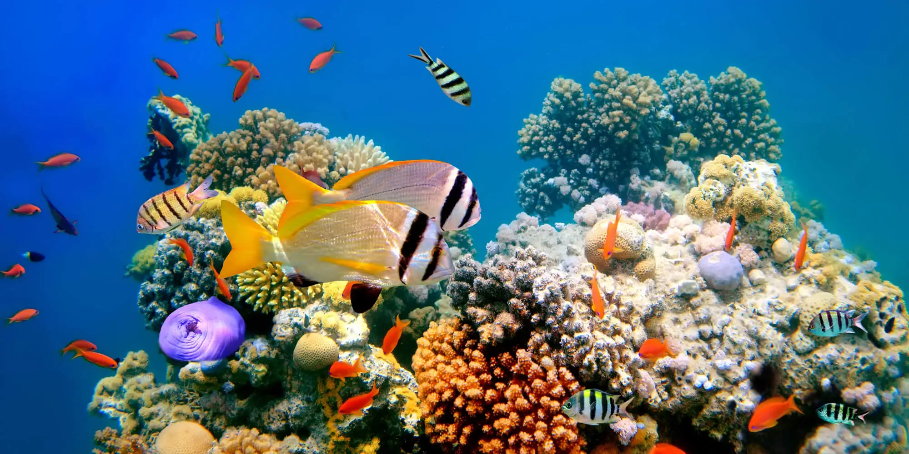
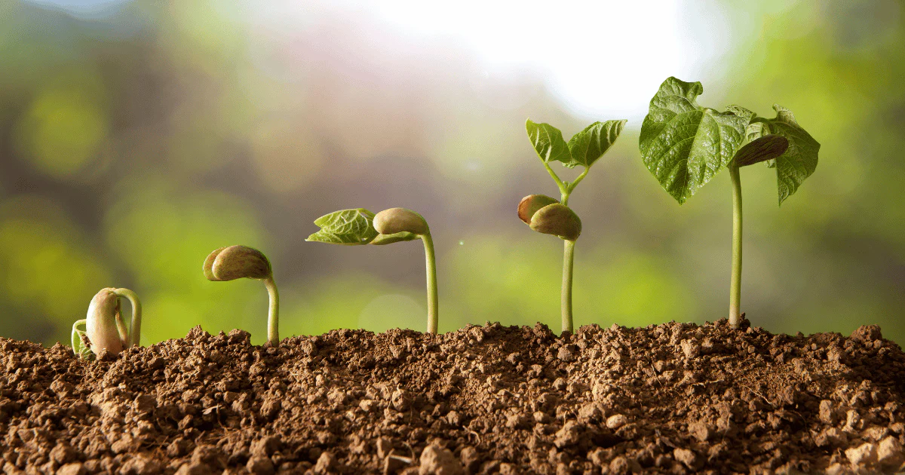

Identify things as being alive or not.
Describe the life processes.
Use life processes to justify whether something is an organism or is non-living.
Recall that the heart is an example of an organ.
Identify and locate the major organs in humans and plants.
Describe the functions of the major human and plant organs.
Describe what happens in photosynthesis.
Recall some tissues found in the heart and plant roots.
Describe how organs and tissues are linked.
Describe the functions of different tissues in some animal and plant organs.
Identify and name some parts of a microscope.
Describe how to make a slide and explain what the coverslip is for.
Explain how the parts of a microscope work.
Describe how to use a microscope to look at a specimen on a slide.
Work out microscope magnifications.
Estimate the sizes of specimens seen under a microscope.
Identify a cell as an animal cell or a plant cell.
Name some of the parts of cells.
Name the parts of animal and plant cells and describe their functions.
Identify and name some specialised cells and describe what they do.
Explain how and why certain cells are specialised.
Describe how cells, tissues, organs and organ systems are linked.
Recall some of the organ systems in plants and animals and what they do.
Recall the organs in some plant and animal organ systems.

State what is meant by the scientific method.
Identify steps often used in the scientific method.
Explain why we use the scientific method.
Describe how some animals care for their offspring.
State what sexual reproduction is.
Recall what gametes (sex cells) are.
Describe what happens in fertilisation.
Describe some differences in how animals reproduce.
Name and identify the main reproductive organs in humans.
Describe the functions of the reproductive organs in humans.
Explain how sperm and egg cells are adapted to their functions.
Describe how sexual intercourse leads to fertilisation.
Describe what happens in implantation.
Describe how fertilisation leads to the forming of an embryo.
Explain how identical and non-identical twins occur.
Describe how materials are supplied and removed from the foetus.
Describe how a foetus is protected in the uterus.
Identify the stages of growth during the gestation period.
Describe what happens during labour and birth.
Describe the changes in diet needed by a baby.
Describe how a foetus can be harmed inside the mother.
Explain why breast milk is best for newborn babies.
Compare the life cycles of different animals.
Describe the changes that occur during puberty and adolescence.
Describe what happens in the menstrual cycle.
Explain the purpose of the menstrual cycle.

State some things that the body needs.
Identify the main organs in the human gas exchange system.
Recall what happens in respiration.
Describe how breathing movements occur.
Describe what happens when muscles contract and relax.
Explain how muscles are adapted to their function.
State a reason why someone might start breathing faster.
State what the pulse rate measures and where it is measured.
Explain how the circulatory system gets blood around the body.
Describe the functions of red blood cells, white blood cells and plasma.
Explain how capillaries are adapted to their function.
Explain how red blood cells are adapted to their function.
Describe the role of scientific questions in the scientific method.
Identify scientific, non-scientific and ethical questions.
Recall the functions of the skeleton.
Identify and recall the functions of some bones in the skeleton.
Describe the basic parts of joints.
Describe how muscles and bones work together to allow movement.
Explain why antagonistic muscles are needed in many joints.
Describe how muscle action is controlled by the nervous system.
Recall what drugs are and describe some problems they can cause.
Recall the effects and side-effects of some drugs, including the effects of stimulants and depressants on reaction time.
Classify drugs as legal, illegal, medical, recreational.
Explain the short- and long-term effects of some drugs, including depressants (such as alcohol) and stimulants (such as caffeine).

Identify variation between organisms of the same and different types.
Identify continuous and discontinuous variation.
Correctly use the terms habitat and species.
Present information using bar charts and scatter graphs.
Choose an appropriate bar chart or a scatter graph to present data.
Identify relationships using scatter graphs.
List some physical environmental factors in an environment.
Describe how organisms are adapted to their habitats.
Identify and give examples of inherited variation.
Correctly use the terms ecosystem and community.
Explain how inherited variation is caused.
Explain how adaptations increase the chances of survival for organisms.
Describe daily and seasonal changes.
Identify and give examples of environmental variation.
Describe how organisms respond to daily and seasonal changes.
Explain how daily and seasonal changes affect populations and communities.
Explain how environmental variation is caused.
Use food chains to make food webs and spot food chains in food web.
State the resources organisms need from their habitats.
Explain why organisms are in competition in a habitat.
Explain how changes in a population or community in an ecosystem affect other populations.
Use food webs to predict changes in populations.
Explain how energy is lost in food chains.
Interpret and draw pyramids of numbers.
Explain the effects of some persistent pesticides on ecosystems.

Describe the characteristics of organisms in the five kingdoms.
Describe how organisms are further classified in their kingdoms.
Identify the genus and species names from a scientific name.
Explain why biodiversity is important.
Describe how a quadrant is used to collect samples.
Use a sample to calculate an estimate.
Explain the effects of too small and too big a sample size.
State the difference between asexual and sexual reproduction.
Recall ways in which plants reproduce asexually.
Describe what happens during fertilisation.
Identify the main parts of a flower and describe their functions.
Use flower shape or pollen type to work out how a plant is pollinated.
Describe how the parts of a flower are adapted to their functions.
Explain how and why plants avoid self-pollination.
Identify the different parts of a seed.
Identify different kinds of fruits and describe how they disperse seeds.
Describe what happens after pollination and before fertilisation.
Describe how a fertilised egg cell grows into an embryo.
Explain the importance of seed dispersal.
Describe the life cycle of a flowering plant.
Recall the resources needed for germination and how this occurs.
Describe what happens in photosynthesis and respiration.
Describe examples of interdependence and how changes in a population or community affect other populations.